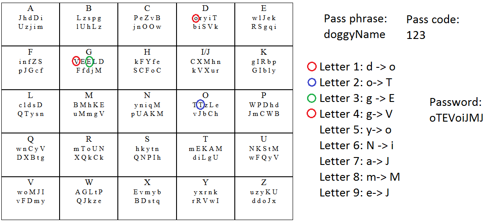

About:
This "Password Grid Generator" is nothing but a tool to help users
maintain secure (read complex) passwords without having to remember
them. As with all tools, the effectiveness of this tool depends on
how the user handles it. Below are two examples of possible uses for the
grid. These methods are merely suggestions. Please feel free to
mix and match. The posiblities are endless!
Examples:
- Example 1
- Choose a simple passphrase (such as 'doggyName')
- Choose a passcode (such as '123')
- Find the first letter of the passphrase in the grid.
- Select the character at the n-th position in the sequence
of characters located below the letter, where n corresponds
to the first digit of the pass code. This character is the first
letter of the password.
- For the next letter of the password, select the next letter of the
passphrase ('o' in this case) and the next digit of the pass code
(2) in this case. Locate the 'o' box and the 2nd character of this box.
This character is the second character of the password.
- Repeat for the other letters of the passphrase.
- Upon using the last digit of the passcode, if there are uncoded
letters left in the passphrase, begin with the first digit of the
passcode and continue as before.

- Example 2
- Choose a shape by looking at the grid and
drawing a shape in your mind.
- Follow steps 2-7 in Method 1.